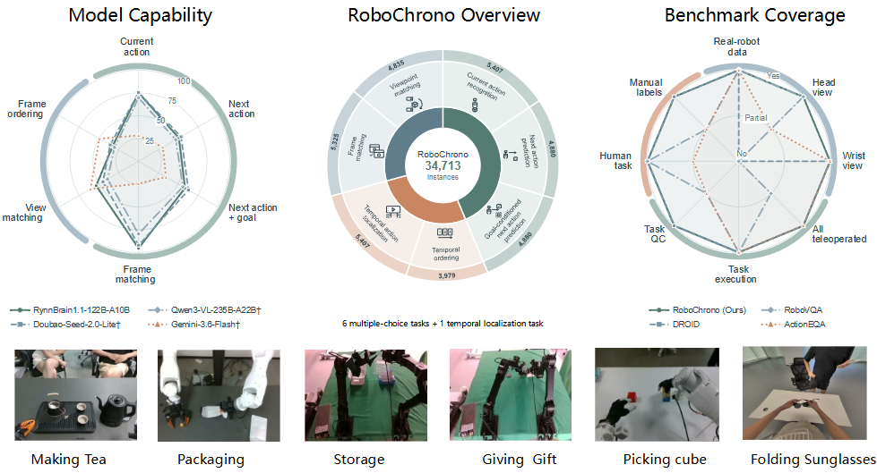
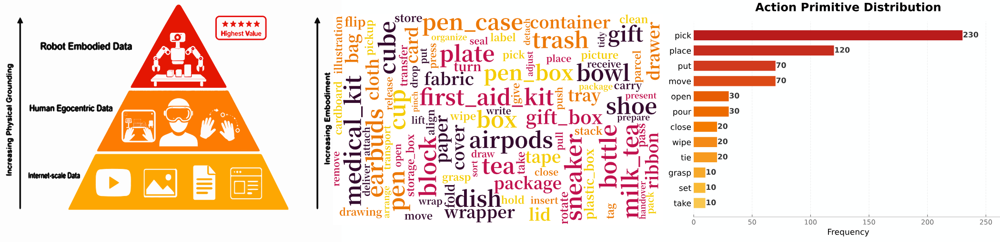
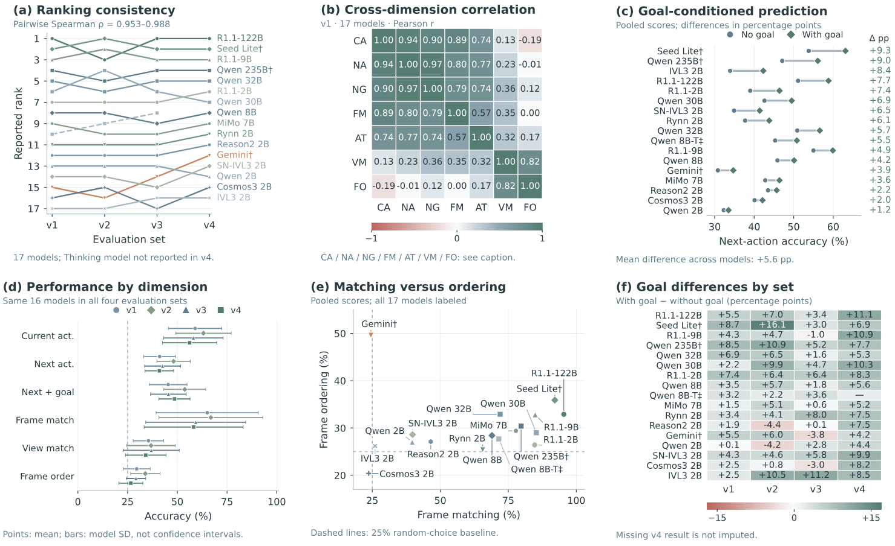

GIM gripper
15 bimanual robot scenarios with external and wrist-mounted views.
Real robot video benchmark · 2026
A real-robot benchmark for streaming task understanding.
Understand what is happening now, what comes next, and when it happens—across robot hands, grippers, and egocentric human demonstrations.
Overview
RoboChrono is designed for models that must reason over an action as it unfolds—not only recognize an isolated image. It brings together synchronized robot observations, human egocentric demonstrations, and temporally grounded questions in one benchmark.
Task executions are collected through human teleoperation under a shared protocol. Repeated executions vary object configurations, motion trajectories, and interaction patterns within each task.

Cross-embodiment data
The task set spans grasping, picking, placing, transferring, stacking, packaging, cleaning, and tool use with everyday objects, containers, tools, and packaged goods.
15 bimanual robot scenarios with external and wrist-mounted views.
5 first-person human-hand scenarios for natural hand-object interaction.
14 teleoperated gripper scenarios with three synchronized cameras.
5 robotic-hand scenarios for fine-grained manipulation.

Deduplicated dataset coverage
Statistics are computed from the formal deduplicated release: 39 tasks and 233 real subtasks only. Synthetic distractor actions are excluded.
Action vocabulary
Top 8 verbs shown; 17 long-tail verbs account for the remaining 29 subtasks.
Task duration
Durations come from annotated action-time endpoints, not decoded video-file length.
Same task, different embodiment
This shared task exposes the same pick-and-place goal under distinct robots, viewpoints, and interaction styles.
01 · GIM · Bimanual gripper
Three synchronized views show two robot arms coordinating coloured cube placement.
02 · Tianji · Gripper
Three synchronized viewpoints document the same teleoperated execution.
03 · Ego · Human hand
First-person demonstration captures natural hand motion.
04 · Tianji · Dexterous hand
Multi-finger hands support a tighter interaction space.
Benchmark analysis
RoboChrono measures six multiple-choice capabilities and one temporal-localization capability. The analyses reveal ranking consistency across evaluation sets, relationships between reasoning dimensions, and the value of making a task goal explicit.

Citation
@misc{robochrono2026,
title={RoboChrono: A Real-Robot Benchmark for Streaming Task Understanding},
author={Anonymous Authors},
year={2026},
note={Project page}
}